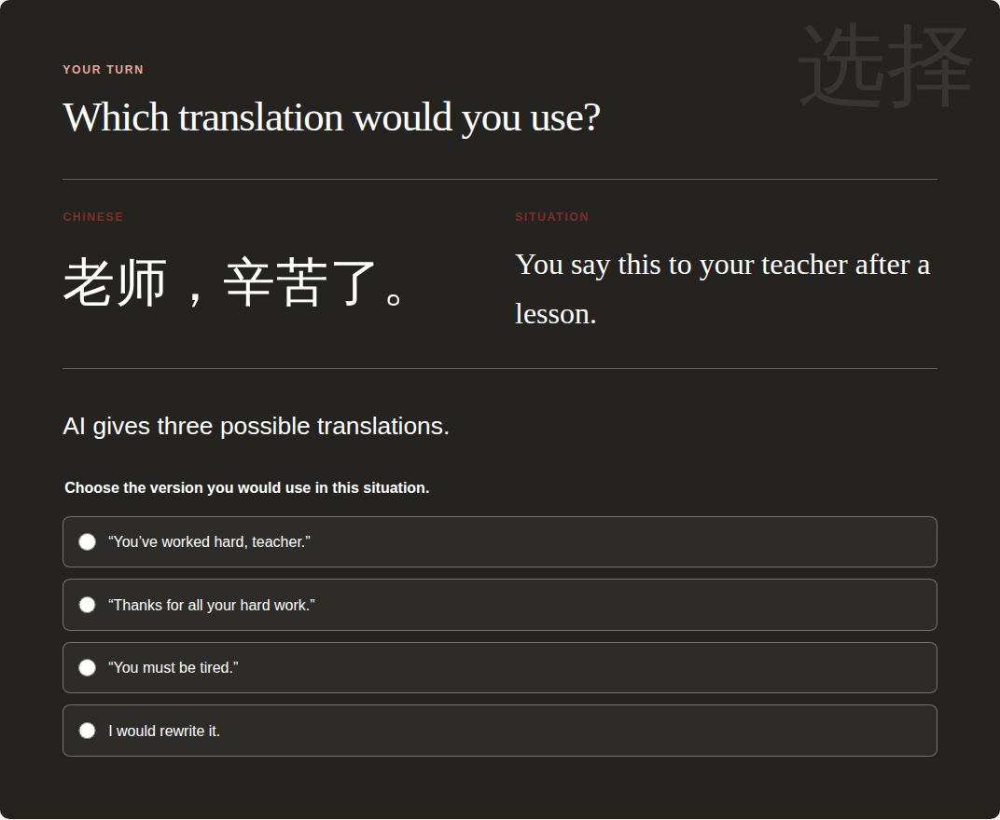
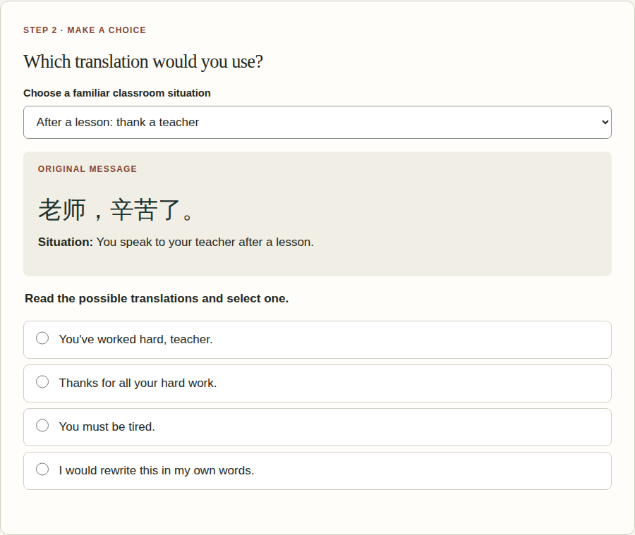
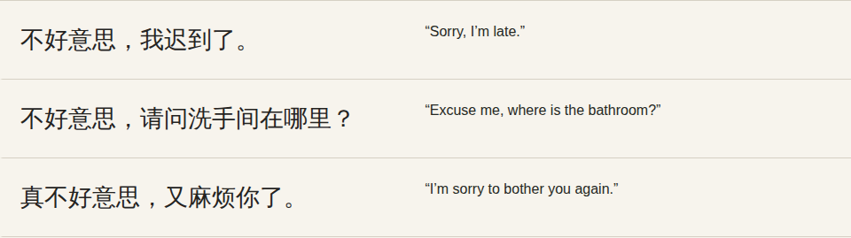
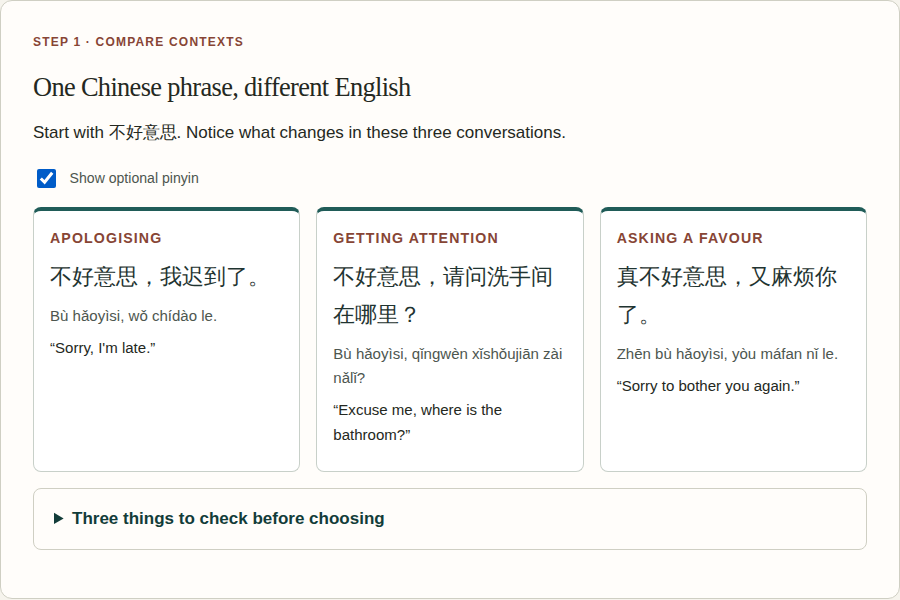
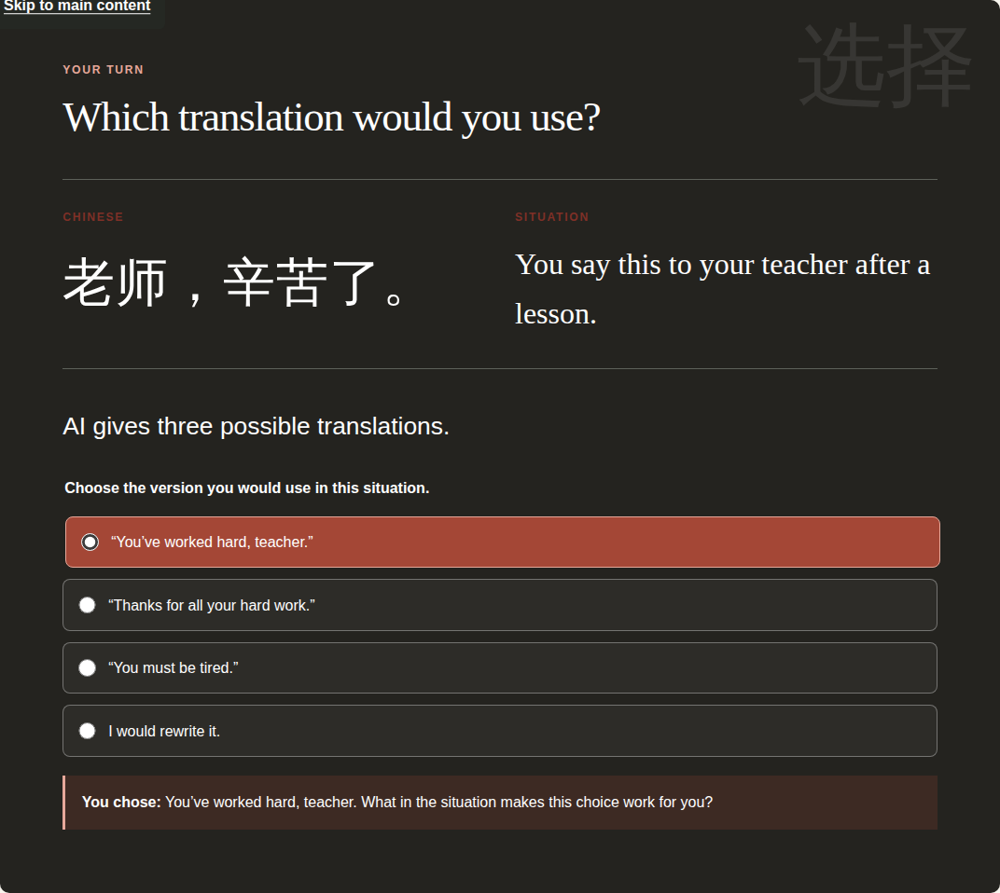
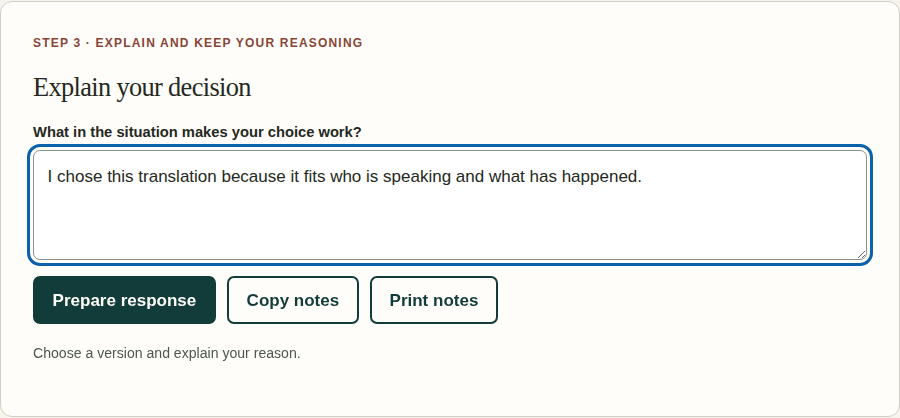

Inclusive audit · Part A to Part B
Inclusive Practice
I reopened the Part A activity and followed the steps as a Year 7–8 Chinese learner would. Here are the problems I found and what I changed.
Retrofit summary
When I built my Part A page, I knew where the question was. I didn't notice how far students had to scroll to reach it until I opened the page again and worked through it from the top. The Chinese examples had no pinyin option either. Students could select an answer, but the next question asked them to explain it without giving them anywhere to write.
I shortened the steps, added a response box and made pinyin optional. Students can also choose between two school situations. In a Year 7–8 Chinese class, some will read the characters comfortably, while others are still learning them. I want them to spend their time thinking about the English translation, so the reading support is there when they need it. Everyone still makes the same translation decision and explains their choice. I used CAST's (2024) UDL guidelines to check where students might need more choice in how they read or respond.
In class, I'll watch whether students can find the question and use pinyin without my help. If several leave the explanation blank or ask what the question means, I'll revise the prompt and check where it sits on the page. Then I can see whether the change helps them complete the task.
Audit and retrofit log
What I found and changed
| UDL pillar | Part A barrier or existing strength | Part B retrofit | Before / After links |
|---|---|---|---|
| Engagement | One final scenario about thanking a teacher. | Students can keep the teacher example or switch to asking for directions at school. | Before: one situationAfter: two choices |
| Representation | Chinese text appeared without an optional pronunciation guide. | A pinyin switch sits beside the examples and classroom question. AC9LC8EU01 includes Pinyin for pronunciation learning (Australian Curriculum, Assessment and Reporting Authority [ACARA], 2022). | Before: Chinese onlyAfter: pinyin toggle |
| Representation | The question was far down the page, after several other sections. | The example, choice and reflection now have their own labelled steps. | Before: long pageAfter: three steps |
| Action & Expression | Selecting an answer displayed a question, with no field for writing a response. | Students type a reason and can copy or print it for feedback. | Before: question onlyAfter: response field |
| Safety across pillars | The original already tells students to avoid submitting private information. | Retained the privacy reminder and kept the activity usable without an AI login. | Before: privacy reminderAfter: retained |
| Technical access (retained and checked) | The original included labelled radio inputs, visible focus styles and Chinese language tags. | Source inspection confirmed native labelled controls, focus styling and status announcements in the revised pages. Calculated contrast: main text on paper 13.63:1; secondary text 6.91:1. | Before: controlsAfter: controls · CSS |
Based on CAST (2024), UDL Guidelines 3.0. The linked pages compare the same original resource. The Translation Evidence Lab is the separate Part B task.
Visual audit evidence
What students see before and after
Three before-and-after comparisons cover engagement, representation, and action and expression. The table above links to the full resources, including their revised step sequence.
01 · Choice of classroom situation


02 · Pronunciation support


03 · Recording an explanation

